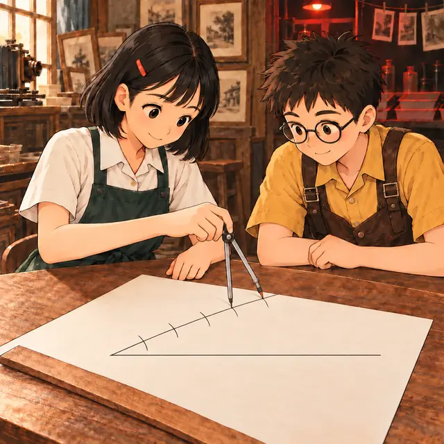

課前暖身漫畫：把試光條切成五等分
阿光要把一條相紙切成五等分做曝光試光條，可是紙條的長度除以 5 量起來很麻煩。小影拿來一本橫線筆記本，把紙條斜放，讓兩端剛好壓在第 1 條和第 6 條橫線上——等距的平行橫線，把斜放的紙條也切成了一樣長的五段。這一節就要說清楚：平行線為什麼能把線段切成比例。
重點 1：高相等的兩個三角形，面積比 = 底邊比
重點整理與敘述
- 三角形面積 \(= \frac{\text{底} \times \text{高}}{2}\)。兩個三角形的高相等時，面積只跟底有關：面積比 = 底邊比。
- 最常見的情形：兩個三角形共用一個頂點，底邊落在同一條直線上。例如 \(B\)、\(D\)、\(C\) 在同一直線上，\(\triangle ABD\) 與 \(\triangle ADC\) 的高都是 \(A\) 到 \(\overline{BC}\) 的距離。
- 另一種情形：底邊分別落在兩條平行線上、頂點在另一條線上。兩平行線的距離處處相等，所以高也相等。
- 同底等高（底相等、高也相等）的兩個三角形面積相等——這一條是下一個重點的關鍵。
視覺互動探索：高不變，面積比跟著底走
調整兩段底的長度，再左右移動上面的頂點（或上面那條邊）。看「量一量」的面積比：只要高不變，它永遠等於底邊比。
形成性評量 (面積與底邊)
Q1. 如圖，\(\triangle ABC\) 中，\(D\) 在 \(\overline{BC}\) 上，\(\overline{BD} = 4\)、\(\overline{DC} = 7\)。\(\triangle ABD\) 面積 : \(\triangle ABC\) 面積 \(=\)？
解析：答案為 B。\(\triangle ABD\) 與 \(\triangle ABC\) 的高都是 \(A\) 到 \(\overline{BC}\) 的距離，面積比 \(=\) 底邊比 \( = \overline{BD} : \overline{BC} \)
A 錯：那是 \(\triangle ABD : \triangle ADC\)，題目問的是和整個 \(\triangle ABC\) 比。
C 錯：那是 \(\triangle ADC : \triangle ABC\)。
D 錯：高相等時面積比就是底邊比，不必平方。
Q2. 如圖，梯形 \(ABCD\) 中，\(\overline{AD} /\!/ \overline{BC}\)，\(\overline{AD} = 9\)、\(\overline{BC} = 16\)，\(M\) 是 \(\overline{BC}\) 的中點。\(\triangle ABM\) 面積 : \(\triangle AMD\) 面積 : \(\triangle DMC\) 面積 \(=\)？
解析：答案為 A。\(\overline{BM} = \overline{MC} = 8\)。三個三角形的底 \(\overline{BM}\)、\(\overline{AD}\)、\(\overline{MC}\) 分別落在兩條平行線上，高都是兩平行線的距離，所以面積比 \(= \overline{BM} : \overline{AD} : \overline{MC} = 8 : 9 : 8\)。
B 錯：三個三角形的底不一樣長，面積不會相等。
C 錯：把上底與下段的位置對調了。
D 錯：\(\triangle AMD\) 的底是 \(\overline{AD} = 9\)，不是 \(\overline{BC}\)。
重點 2：平行線截比例線段性質①——兩邊截成相同的比
重點整理與敘述
- \(\triangle ABC\) 中，\(D\)、\(E\) 分別在 \(\overline{AB}\)、\(\overline{AC}\) 上，且 \(\overline{DE} /\!/ \overline{BC}\)，則兩邊被截成相同的比，稱為比例線段。
- 三個比例式都成立，挑題目給的那幾段來用：上段 : 下段、上段 : 全長、下段 : 全長。
- 理由（面積推理）：連 \(\overline{BE}\)、\(\overline{CD}\)。\(\triangle ADE : \triangle BDE = \overline{AD} : \overline{DB}\)、\(\triangle ADE : \triangle CDE = \overline{AE} : \overline{EC}\)；又 \(\overline{DE} /\!/ \overline{BC}\)，\(\triangle BDE\) 與 \(\triangle CDE\) 同底等高、面積相等，兩個比就相等。
- 列式時同一邊的線段寫在同一側：\(\overline{AD} : \overline{DB} = \overline{AE} : \overline{EC}\)，左邊都是 \(\overline{AB}\) 上的、右邊都是 \(\overline{AC}\) 上的。
\(\overline{AD} : \overline{DB} = \overline{AE} : \overline{EC}\)
\(\overline{AD} : \overline{AB} = \overline{AE} : \overline{AC}\)
\(\overline{DB} : \overline{AB} = \overline{EC} : \overline{AC}\)
視覺互動探索：三個比例式
調整 \(\overline{AD}\)、\(\overline{DB}\) 與 \(\overline{AC}\) 的長，\(\overline{DE}\) 一直和 \(\overline{BC}\) 平行。切換比例式，看 \(\overline{AC}\) 上的兩段怎麼跟著 \(\overline{AB}\) 上的比走；按「為什麼」看面積推理。
形成性評量 (平行線截比例線段性質①)
Q3. 如圖，\(\triangle ABC\) 中，\(D\)、\(E\) 分別在 \(\overline{AB}\)、\(\overline{AC}\) 上，\(\overline{DE} /\!/ \overline{BC}\)。若 \(\overline{AD} = 7\)、\(\overline{DB} = 3\)、\(\overline{AE} = 14\)，則 \(\overline{EC} =\)？
解析：答案為 C。\(\overline{DE} /\!/ \overline{BC}\)，所以 \(\overline{AD} : \overline{DB} = \overline{AE} : \overline{EC}\)：
\[ \begin{aligned} & 7 : 3 = 14 : \overline{EC} \\ & 7\,\overline{EC} = 42 \\ & \overline{EC} = 6 \end{aligned} \]
A 錯：把比例式寫成 \(7 : 3 = \overline{EC} : 14\)，左右兩邊的上下段順序不一致。
B 錯：寫成 \(7 : 10 = 14 : \overline{EC}\)，一邊用「上段 : 全長」、另一邊用「上段 : 下段」，配錯了。
D 錯：以為兩邊的「差」一樣（\(7 - 3 = 14 - 10\)），比例線段比的是比，不是差。
Q4. 如圖，\(\triangle ABC\) 中，\(\overline{DE} /\!/ \overline{BC}\)，\(\overline{AD} = 10\)、\(\overline{AB} = 24\)、\(\overline{AC} = 36\)。\(\overline{EC} =\)？
解析：答案為 D。題目給的是全長，用「上段 : 全長」：
\[ \begin{aligned} & \overline{AD} : \overline{AB} = \overline{AE} : \overline{AC} \\ & 10 : 24 = \overline{AE} : 36 \\ & \overline{AE} = 15 \end{aligned} \]
所以 \(\overline{EC} = 36 - 15 = 21\)。
A 錯：\(15\) 是 \(\overline{AE}\)，題目問的是 \(\overline{EC}\)。
B 錯：\(36 - 10\) 把 \(\overline{AB}\) 上的線段拿去減 \(\overline{AC}\)，沒有用比例。
C 錯：\(14\) 是 \(\overline{DB}\)，不是 \(\overline{EC}\)。
重點 3：平行線截比例線段性質②——DE : BC = AD : AB
重點整理與敘述
- \(\overline{DE} /\!/ \overline{BC}\) 時，兩條平行邊的長也成比例：\( \overline{DE} : \overline{BC} \)
\( {}= \overline{AD} : \overline{AB} \) \( {}= \overline{AE} : \overline{AC} \)。 - 理由：過 \(D\) 作 \(\overline{AC}\) 的平行線交 \(\overline{BC}\) 於 \(F\)，\(DFCE\) 是平行四邊形，\(\overline{DE} = \overline{FC}\)；在 \(\triangle BAC\) 中用性質①，\(\overline{FC} : \overline{BC} = \overline{AD} : \overline{AB}\)。
- ⚠️ 一定要配「上段 : 全長」：\(\overline{DE}\) 是小三角形 \(ADE\) 的邊，\(\overline{BC}\) 是整個 \(\triangle ABC\) 的邊，所以配 \(\overline{AD} : \overline{AB}\)，不是 \(\overline{AD} : \overline{DB}\)。
- 好幾條平行線時，每一條各配自己的「上段 : 全長」。例如 \(\overline{AB}\) 被分成三等分，兩條平行線分別是 \(\overline{BC}\) 的 \(\frac{1}{3}\) 與 \(\frac{2}{3}\)。
視覺互動探索：平行邊配「上段 : 全長」
調整 \(\overline{AD}\)、\(\overline{DB}\) 與 \(\overline{BC}\)，看 \(\overline{DE}\) 怎麼算；紅色那一列是配錯的結果。切到「等分」模式，看好幾條平行線的長度怎麼排。
形成性評量 (平行線截比例線段性質②)
Q5. 如圖，\(\triangle ABC\) 中，\(\overline{DE} /\!/ \overline{BC}\)，\(\overline{DE} = 4\)、\(\overline{DB} = 10\)、\(\overline{BC} = 9\)。\(\overline{AD} =\)？
解析：答案為 A。設 \(\overline{AD} = x\)，則 \(\overline{AB} = x + 10\)。\(\overline{DE} : \overline{BC} = \overline{AD} : \overline{AB}\)：
\[ \begin{aligned} & 4 : 9 = x : (x + 10) \\ & 9x = 4x + 40 \\ & x = 8 \end{aligned} \]
B 錯：寫成 \(4 : 9 = x : 10\)，把平行邊配到「上段 : 下段」。
C 錯：\(18\) 是 \(\overline{AB}\) 的長，不是 \(\overline{AD}\)。
D 錯：寫成 \(4 : 9 = 10 : x\)，比例的前後項放反了。
Q6. 如圖，\(\triangle ABC\) 中，\(D\)、\(E\) 在 \(\overline{AB}\) 上，\(F\)、\(G\) 在 \(\overline{AC}\) 上，\(\overline{DF} /\!/ \overline{EG} /\!/ \overline{BC}\)，且 \(\overline{AD} : \overline{DE} : \overline{EB} = 1 : 2 : 4\)。若 \(\overline{BC} = 21\)，則 \(\overline{EG} =\)？
解析：答案為 C。\(\overline{EG}\) 的上段是 \(\overline{AE}\)，\( \overline{AE} : \overline{AB} \)
B 錯：用了 \(\overline{EB} : \overline{AB} = 4 : 7\)，那是下段。
D 錯：用了 \(\overline{AE} : \overline{EB} = 3 : 4\)，平行邊要配全長。
重點 4：兩邊截成相同的比 ⇒ 平行
重點整理與敘述
- 反過來也成立：\(\triangle ABC\) 中，\(D\)、\(E\) 分別在 \(\overline{AB}\)、\(\overline{AC}\) 上，只要下列任一個比例式成立，就有 \(\overline{DE} /\!/ \overline{BC}\)。
- 理由：\(\overline{AD} : \overline{DB} = \overline{AE} : \overline{EC}\) 推出 \(\triangle BDE\) 與 \(\triangle CDE\) 面積相等；它們同底 \(\overline{DE}\)，所以 \(B\)、\(C\) 到 \(\overline{DE}\) 的距離相等，\(\overline{DE} /\!/ \overline{BC}\)。
- 判斷平行之後，就能用平行線的性質：\(\angle ADE = \angle B\)、\(\angle AED = \angle C\)（同位角相等）。
- 看的是比，不是長度差：兩邊各差一樣多，比卻可能不一樣。
① \(\overline{AD} : \overline{DB} = \overline{AE} : \overline{EC}\)
② \(\overline{AD} : \overline{AB} = \overline{AE} : \overline{AC}\)
③ \(\overline{DB} : \overline{AB} = \overline{EC} : \overline{AC}\)
視覺互動探索：比一比再判斷
分別調整兩邊被截成的四段長。兩個比相等時 \(\overline{DE}\) 變綠、和 \(\overline{BC}\) 平行；看「量一量」的 \(\angle ADE\) 與 \(\angle B\) 是否相等。
形成性評量 (判斷平行)
Q7. \(\triangle ABC\) 中，\(D\)、\(E\) 分別在 \(\overline{AB}\)、\(\overline{AC}\) 上。下列哪一組數據可以確定 \(\overline{DE} /\!/ \overline{BC}\)？
解析：答案為 D。\(\overline{AD} : \overline{DB} = 7 : 4\)，\(\overline{AE} : \overline{EC} = 14 : 8 = 7 : 4\)，兩邊截成相同的比，所以 \(\overline{DE} /\!/ \overline{BC}\)。
A 錯：兩邊的差都是 \(3\)，但 \(7 : 4 \ne 11 : 8\)，看的是比不是差。
B 錯：\(\overline{AE} : \overline{EC} = 8 : 14 = 4 : 7\)，上下段順序反了。
C 錯：\(\overline{AD} : \overline{AB} = 7 : 11\)，\(\overline{AE} : \overline{AC} = 14 : 18 = 7 : 9\)，不相等。
Q8. 如圖，\(\triangle ABC\) 中，\(D\)、\(E\) 分別在 \(\overline{AB}\)、\(\overline{AC}\) 上，\(\overline{AD} = 10\)、\(\overline{DB} = 14\)、\(\overline{AE} = 15\)、\(\overline{EC} = 21\)，\(\angle B = 58^\circ\)。\(\angle ADE =\)？
解析：答案為 B。\(\overline{AD} : \overline{DB} = 10 : 14 = 5 : 7\)，\(\overline{AE} : \overline{EC} = 15 : 21 = 5 : 7\)，比相等，所以 \(\overline{DE} /\!/ \overline{BC}\)，同位角 \(\angle ADE = \angle B = 58^\circ\)。
A 錯：\(122^\circ\) 是 \(\angle BDE\)（同側內角），不是 \(\angle ADE\)。
C 錯：\(32^\circ\) 是 \(90^\circ - 58^\circ\)，圖中沒有直角。
D 錯：比例相等就能判斷平行，條件是夠的。
重點 5：「平行邊的比」不能反過來判斷平行
重點整理與敘述
- 性質②說：\( \overline{DE} /\!/ \overline{BC} \)
\( {}\Rightarrow \overline{DE} : \overline{BC} \) \( {}= \overline{AD} : \overline{AB} \)。但反過來不一定成立。 - 反例：以 \(D\) 為圓心、\(\overline{DE}\) 為半徑畫弧，弧和 \(\overline{AC}\) 可能還交於另一點 \(E'\)。\(\overline{DE'} = \overline{DE}\)，所以 \(\overline{DE'} : \overline{BC}\) 也等於 \(\overline{AD} : \overline{AB}\)，可是 \(\overline{DE'}\) 和 \(\overline{BC}\) 不平行。
- 要判斷平行，只能用重點 4 的三個比例式——都是兩邊被截成的線段互相比，沒有 \(\overline{DE}\)、\(\overline{BC}\)。
\(\not\Rightarrow \overline{DE} /\!/ \overline{BC}\)
視覺互動探索：同樣長，卻不平行
\(\overline{DE}\) 和 \(\overline{BC}\) 平行；虛線弧以 \(D\) 為圓心，交 \(\overline{AC}\) 於 \(E\) 和 \(E'\)。調整 \(D\) 的位置和三角形的形狀，比較 \(\angle ADE'\) 與 \(\angle B\)。
形成性評量 (不能反推)
Q9. \(\triangle ABC\) 中，\(D\)、\(E\) 分別在 \(\overline{AB}\)、\(\overline{AC}\) 上，已知 \(\overline{DE} : \overline{BC} = \overline{AD} : \overline{AB}\)。下列敘述何者正確？
解析：答案為 C。以 \(D\) 為圓心、\(\overline{DE}\) 為半徑畫弧，可能交 \(\overline{AC}\) 於兩點，兩點連到 \(D\) 的線段一樣長、都滿足這個比例式，卻最多只有一條和 \(\overline{BC}\) 平行。
A 錯：這個比例式不能用來判斷平行。
B 錯：也有可能剛好平行，只是「不一定」。
D 錯：\(\overline{DE}\) 不一定平行，兩邊也就不一定截成相同的比。
Q10. \(\triangle ABC\) 中，\(D\) 在 \(\overline{AB}\) 上，\(\overline{AD} = 4\)、\(\overline{AB} = 10\)、\(\overline{BC} = 15\)；\(E\) 在 \(\overline{AC}\) 上，\(\overline{DE} = 6\)。小影說：「\(\overline{DE} : \overline{BC} = \overline{AD} : \overline{AB}\)，所以 \(\overline{DE} /\!/ \overline{BC}\)。」阿光以 \(D\) 為圓心、\(\overline{DE}\) 為半徑畫弧，發現弧和 \(\overline{AC}\) 還交於另一點 \(E'\)。下列何者正確？
解析：答案為 A。\(E\)、\(E'\) 在同一段弧上，\(\overline{DE'} = \overline{DE} = 6\)，\( \overline{DE'} : \overline{BC} \)
B 錯：同一段弧上的點到圓心的距離都等於半徑。
C 錯：過 \(D\) 和 \(\overline{BC}\) 平行的直線只有一條。
D 錯：也可能剛好平行；要判斷，得量兩邊截成的比。
重點 6：兩邊中點連線段——平行第三邊、長度是一半
重點整理與敘述
- \(\triangle ABC\) 中，\(D\)、\(E\) 分別是 \(\overline{AB}\)、\(\overline{AC}\) 的中點，則 \(\overline{DE} /\!/ \overline{BC}\)，且 \(\overline{DE} = \frac{1}{2}\overline{BC}\)。
- 理由：\( \overline{AD} : \overline{DB} \)
\( {}= \overline{AE} : \overline{EC} \) \( {}= 1 : 1 \)，由重點 4 得 \(\overline{DE} /\!/ \overline{BC}\)；再由重點 3，\( \overline{DE} : \overline{BC} \) \( {}= \overline{AD} : \overline{AB} \) \( {}= 1 : 2 \)。 - 它是平行線截比例線段性質的特例（比剛好是 \(1 : 1\)）。
- \(\triangle ADE\) 的三邊都是 \(\triangle ABC\) 對應邊的一半，所以 \(\triangle ADE\) 的周長是 \(\triangle ABC\) 周長的一半。
- 一層一層取中點時，每一層再用一次這個性質，長度每次變成一半。
視覺互動探索：中點連線段
用三條邊長決定三角形，看兩邊中點連線段的長度與 \(\triangle ADE\) 的周長；切到「一層一層」看連續取中點。三邊圍不成三角形時，畫面會告訴你為什麼。
形成性評量 (中點連線段)
Q11. \(\triangle ABC\) 中，\(\overline{AB} = 13\)、\(\overline{BC} = 10\)、\(\overline{AC} = 15\)，\(D\)、\(E\) 分別是 \(\overline{AB}\)、\(\overline{AC}\) 的中點。\(\triangle ADE\) 的周長為多少？
解析：答案為 D。\(\overline{AD} = \frac{13}{2}\)、\(\overline{AE} = \frac{15}{2}\)、\(\overline{DE} = \frac{1}{2}\overline{BC} = 5\)，周長
\[ \frac{13}{2} + \frac{15}{2} + 5 = 19 \]
也就是 \(\triangle ABC\) 周長 \(38\) 的一半。
A 錯：\(38\) 是 \(\triangle ABC\) 的周長。
B 錯：\(\frac{13}{2} + \frac{15}{2} + 10\)，\(\overline{DE}\) 沒有取一半。
C 錯：取了兩次一半。
Q12. 如圖，\(\triangle ABC\) 中，\(D\)、\(E\) 是 \(\overline{AB}\)、\(\overline{AC}\) 的中點，\(F\)、\(G\) 是 \(\overline{AD}\)、\(\overline{AE}\) 的中點，\(P\)、\(Q\) 是 \(\overline{AF}\)、\(\overline{AG}\) 的中點。若 \(\overline{PQ} = 3\)，則 \(\overline{FG} + \overline{DE} + \overline{BC} =\)？
解析：答案為 C。每一層都是下一層的兩邊中點連線段：\(\overline{FG} = 2\overline{PQ} = 6\)、\(\overline{DE} = 2\overline{FG} = 12\)、\(\overline{BC} = 2\overline{DE} = 24\)，和為 \(6 + 12 + 24 = 42\)。
A 錯：只算到一半。
B 錯：以為每往下一層多 \(3\)（\(6 + 9 + 12\)），其實是每層加倍。
D 錯：多加了 \(\overline{PQ}\)。
重點 7：過一邊中點、平行另一邊，會通過第三邊的中點
重點整理與敘述
- \(\triangle ABC\) 中，\(D\) 是 \(\overline{AB}\) 的中點，過 \(D\) 作 \(\overline{BC}\) 的平行線交 \(\overline{AC}\) 於 \(E\)，則 \(E\) 是 \(\overline{AC}\) 的中點。
- 理由：\(\overline{DE} /\!/ \overline{BC}\)，\( \overline{AE} : \overline{EC} \)
\( {}= \overline{AD} : \overline{DB} \) \( {}= 1 : 1 \)。 - 知道 \(E\) 是中點以後，\(\overline{DE}\) 就是兩邊中點連線段，\(\overline{DE} = \frac{1}{2}\overline{BC}\)、\(\overline{AE} = \frac{1}{2}\overline{AC}\) 都能直接算。
- 和重點 6 的差別：重點 6 已知兩個中點、推出平行；這裡已知一個中點和平行、推出另一個中點。
視覺互動探索：只有平行那一條會過中點
過 \(\overline{AB}\) 的中點 \(D\) 畫一條直線，調整它的傾斜：只有傾斜 \(0^\circ\)（和 \(\overline{BC}\) 平行）時，\(E\) 才落在 \(\overline{AC}\) 的中點。
形成性評量 (過中點的平行線)
Q13. 如圖，\(\triangle ABC\) 中，\(D\)、\(E\) 分別在 \(\overline{AB}\)、\(\overline{AC}\) 上，\(\overline{DE} /\!/ \overline{BC}\)，\(\overline{AD} = \overline{DB} = 5\)，\(\overline{AC} = 13\)、\(\overline{BC} = 19\)。\(\overline{AE}\) 與 \(\overline{DE}\) 分別是多少？
解析：答案為 B。\(\overline{AD} = \overline{DB}\)，\(D\) 是 \(\overline{AB}\) 的中點，又 \(\overline{DE} /\!/ \overline{BC}\)，所以 \(E\) 是 \(\overline{AC}\) 的中點：\(\overline{AE} = \frac{1}{2} \times 13 = \frac{13}{2}\)，\(\overline{DE} = \frac{1}{2} \times 19 = \frac{19}{2}\)。
A、D 錯：\(\overline{AE}\) 是 \(\overline{AC}\) 的一半，不是等於 \(\overline{AD}\)。
C 錯：\(\overline{DE}\) 是兩邊中點連線段，只有 \(\overline{BC}\) 的一半。
Q14. 等腰 \(\triangle ABC\) 中，\(\overline{AB} = \overline{AC}\)，\(D\) 是 \(\overline{AB}\) 的中點，過 \(D\) 作 \(\overline{DE} /\!/ \overline{BC}\) 交 \(\overline{AC}\) 於 \(E\)。若 \(\overline{DE} = 7\)、\(\overline{DB} = 5\)，則 \(\triangle ABC\) 的周長為多少？
解析：答案為 A。\(D\) 是中點，\(\overline{AB} = 2 \times 5 = 10\)，\(\overline{AC} = \overline{AB} = 10\)；\(E\) 也是中點，\(\overline{BC} = 2\overline{DE} = 14\)。周長 \(= 10 + 10 + 14 = 34\)。
B 錯：\(10 + 7 + 7\)，把 \(\overline{BC}\) 當成和 \(\overline{DE}\) 一樣長再算兩次。
C 錯：\(10 + 5 + 14\)，\(\overline{AC}\) 只算了一半。
D 錯：那是 \(\triangle ADE\) 的周長。
重點 8：三條平行線截兩條截線，截出的線段成比例
重點整理與敘述
- \(L_1 /\!/ L_2 /\!/ L_3\)，分別交截線 \(M_1\) 於 \(A\)、\(B\)、\(C\)，交截線 \(M_2\) 於 \(D\)、\(E\)、\(F\)，則 \(\overline{AB} : \overline{BC} = \overline{DE} : \overline{EF}\)。
- 理由：連 \(\overline{AF}\) 交 \(L_2\) 於 \(I\)。在 \(\triangle ACF\) 中 \(\overline{AB} : \overline{BC} = \overline{AI} : \overline{IF}\)；在 \(\triangle FDA\) 中 \(\overline{DE} : \overline{EF} = \overline{AI} : \overline{IF}\)。
- 兩條截線不必平行、也不必一樣斜，比都相同。平行線等距時，截出的線段也等長——這就是暖身漫畫裡用橫線紙等分紙條的道理。
- 比例式可以化成方程式：內項乘積 \(=\) 外項乘積。出現二次方程式時，記得長度要大於 \(0\)，不合的根要捨去。
\(\Rightarrow \overline{AB} : \overline{BC} = \overline{DE} : \overline{EF}\)
視覺互動探索：截線怎麼斜，比都不變
調整兩段平行線的間距，再把兩條截線轉來轉去。截出的長度會變，但 \(\overline{AB} : \overline{BC}\) 和 \(\overline{DE} : \overline{EF}\) 永遠相等；切到「為什麼」看證明。
形成性評量 (三條平行線)
Q15. 如圖，\(L_1 /\!/ L_2 /\!/ L_3\)，\(\overline{AB} = x + 3\)、\(\overline{BC} = 2x + 4\)、\(\overline{DE} = 14\)、\(\overline{EF} = 24\)。\(x =\)？
解析：答案為 D。\(\overline{AB} : \overline{BC} = \overline{DE} : \overline{EF}\)：
\[ \begin{aligned} & (x + 3) : (2x + 4) = 14 : 24 \\ & 24(x + 3) = 14(2x + 4) \\ & 24x + 72 = 28x + 56 \\ & x = 4 \end{aligned} \]
驗算：\(\overline{AB} = 7\)、\(\overline{BC} = 12\)，\(7 : 12 = 14 : 24\)。
A、B、C 錯：代回去 \(\overline{AB} : \overline{BC}\) 分別是 \(5 : 8\)、\(8 : 14\)、\(10 : 18\)，都不等於 \(7 : 12\)。
Q16. 如圖，\(L_1 /\!/ L_2 /\!/ L_3\)，\(\overline{AB} = 7\)、\(\overline{BC} = x + 1\)、\(\overline{DE} = x - 1\)、\(\overline{EF} = 9\)。\(x =\)？
解析：答案為 C。\(\overline{AB} : \overline{BC} = \overline{DE} : \overline{EF}\)：
\[ \begin{aligned} & 7 : (x + 1) = (x - 1) : 9 \\ & (x + 1)(x - 1) = 63 \\ & x^2 = 64 \end{aligned} \]
\(x = 8\) 或 \(x = -8\)。但 \(x = -8\) 時 \(\overline{DE} = -9\)，長度不能是負的，捨去，所以 \(x = 8\)。
A 錯：沒有把負的長度捨去。
B、D 錯：代回去比例式不成立。
重點 9：梯形中平行兩底的線段
重點整理與敘述
- 四邊形 \(ABCD\) 中 \(\overline{AD} /\!/ \overline{EF} /\!/ \overline{BC}\)，先由重點 8 得 \(\overline{AE} : \overline{EB} = \overline{DF} : \overline{FC}\)。
- 方法一：連對角線 \(\overline{AC}\) 交 \(\overline{EF}\) 於 \(G\)。\(\overline{EG}\) 在 \(\triangle ABC\) 裡配 \(\overline{BC}\)（用 \(\overline{AE} : \overline{AB}\)），\(\overline{GF}\) 在 \(\triangle CAD\) 裡配 \(\overline{AD}\)（用 \(\overline{CF} : \overline{CD}\)），再相加。
- 方法二：作平行線 \(\overline{DN} /\!/ \overline{AB}\)，把上底平移下來：\(\overline{EM} = \overline{AD}\)，剩下的 \(\overline{MF}\) 在 \(\triangle DNC\) 裡算。
- ⚠️ \(\overline{EF}\) 不是兩底的平均——只有 \(E\)、\(F\) 是兩腰中點時才是（第四冊的梯形中線）。
視覺互動探索：兩種切法算 EF
調整 \(\overline{AE} : \overline{EB}\) 與上下底的長，切換「連對角線」和「作平行線」兩種方法，看兩種切法算出的 \(\overline{EF}\) 是否一樣。
形成性評量 (梯形中的線段)
Q17. 如圖，四邊形 \(ABCD\) 中，\(\overline{AD} /\!/ \overline{EF} /\!/ \overline{BC}\)，\(\overline{AE} : \overline{EB} = 2 : 5\)，\(\overline{AD} = 6\)、\(\overline{BC} = 13\)。\(\overline{EF} =\)？
解析：答案為 B。連 \(\overline{AC}\) 交 \(\overline{EF}\) 於 \(G\)：
\[ \begin{aligned} & \overline{EG} = 13 \times \frac{2}{7} = \frac{26}{7} \\ & \overline{GF} = 6 \times \frac{5}{7} = \frac{30}{7} \\ & \overline{EF} = \frac{26}{7} + \frac{30}{7} = 8 \end{aligned} \]
（作 \(\overline{DN} /\!/ \overline{AB}\) 也可以：\(6 + (13 - 6) \times \frac{2}{7} = 8\)。）
A 錯：\(\frac{6 + 13}{2}\) 是兩腰中點連線段的長，這裡 \(E\) 不是中點。
C 錯：把 \(\frac{2}{7}\) 和 \(\frac{5}{7}\) 配反了。
D 錯：只算了 \(\overline{EG}\)。
Q18. 如圖，四邊形 \(ABCD\) 中，\(\overline{AD} /\!/ \overline{BC}\)，對角線 \(\overline{AC}\)、\(\overline{BD}\) 交於 \(G\)，過 \(G\) 作 \(\overline{EF} /\!/ \overline{BC}\)，交 \(\overline{AB}\) 於 \(E\)、\(\overline{CD}\) 於 \(F\)。若 \(\overline{AD} = 12\)、\(\overline{BC} = 20\)，則 \(\overline{EF} =\)？
解析：答案為 D。\(\overline{EG}\) 同時在兩個三角形裡：在 \(\triangle ABC\) 中 \(\overline{EG} : \overline{BC} = \overline{AE} : \overline{AB}\)，在 \(\triangle BAD\) 中 \(\overline{EG} : \overline{AD} = \overline{BE} : \overline{AB}\)。所以
\[ 20 \times \overline{AE} = 12 \times \overline{BE} \]
\(\overline{AE} : \overline{EB} = 3 : 5\)，\(\overline{EG} = 20 \times \frac{3}{8} = \frac{15}{2}\)。同理 \(\overline{GF} = 20 \times \frac{3}{8} = \frac{15}{2}\)（\(\overline{DF} : \overline{DC} = \overline{AE} : \overline{AB}\)），\(\overline{EF} = 15\)。
A 錯：\(16\) 是兩底的平均，\(G\) 不在兩腰中點的高度。
B 錯：只算了 \(\overline{EG}\)。
C 錯：\(\overline{EF}\) 比上底長，不會等於 \(\overline{AD}\)。
重點 10：落在平行線上的線段，先平移再列比例
重點整理與敘述
- \(L_1 /\!/ L_2 /\!/ L_3\) 與截線 \(M_1\)、\(M_2\) 圍出 \(\overline{AD}\)、\(\overline{BE}\)、\(\overline{CF}\) 三條「橫的」線段。它們落在平行線上，不是被平行線截出來的，所以 \(\overline{AB} : \overline{AC} = \overline{BE} : \overline{CF}\) 不成立。
- 正確做法：過 \(A\) 作 \(M_3 /\!/ M_2\)，交 \(L_2\)、\(L_3\) 於 \(G\)、\(H\)。\(AGED\)、\(GHFE\) 是平行四邊形，\(\overline{GE} = \overline{HF} = \overline{AD}\)。
- 扣掉 \(\overline{AD}\) 剩下的 \(\overline{BG}\)、\(\overline{CH}\) 在 \(\triangle ACH\) 裡，才能用 \(\overline{AB} : \overline{AC} = \overline{BG} : \overline{CH}\)，最後再加回 \(\overline{HF}\)。
- 同樣的道理：\(\overline{BG} : \overline{CH}\) 成立，不代表 \((\overline{BG} + a) : (\overline{CH} + a)\) 也成立。
視覺互動探索：錯在哪、怎麼補
調整截線上的兩段和平行線上的 \(\overline{AD}\)、\(\overline{BE}\)。切到「錯誤做法」看直接配比例會算出多長；切到「正確做法」看平移後怎麼算出 \(\overline{CF}\)。
形成性評量 (先平移再比)
Q19. 如圖，\(L_1 /\!/ L_2 /\!/ L_3\)，截線 \(M_1\) 交三線於 \(A\)、\(B\)、\(C\)，截線 \(M_2\) 交三線於 \(D\)、\(E\)、\(F\)。若 \(\overline{AB} = 4\)、\(\overline{BC} = 6\)、\(\overline{AD} = 7\)、\(\overline{BE} = 9\)，則 \(\overline{CF} =\)？
解析：答案為 A。過 \(A\) 作 \(M_3 /\!/ M_2\)，交 \(L_2\)、\(L_3\) 於 \(G\)、\(H\)，\(\overline{GE} = \overline{HF} = 7\)：
\[ \begin{aligned} & \overline{BG} = 9 - 7 = 2 \\ & 4 : 10 = 2 : \overline{CH},\ \overline{CH} = 5 \\ & \overline{CF} = 5 + 7 = 12 \end{aligned} \]
B 錯：直接寫 \(\overline{AB} : \overline{AC} = \overline{BE} : \overline{CF}\)，得 \(9 \times \frac{10}{4}\)，\(\overline{BE}\)、\(\overline{CF}\) 不能這樣配。
C 錯：寫成 \(\overline{AB} : \overline{BC} = \overline{BE} : \overline{CF}\)，同樣是把平行線上的線段拿來配比例。
D 錯：以為每往下一條就多 \(2\)，忽略了 \(\overline{BC}\) 比 \(\overline{AB}\) 長。
Q20. \(L_1 /\!/ L_2 /\!/ L_3\)，截線 \(M_1\) 上 \(\overline{AB} = 6\)、\(\overline{BC} = 3\)，平行線上 \(\overline{AD} = 2\)、\(\overline{BE} = 4\)。小影求 \(\overline{CF}\) 時寫「\(\overline{AB} : \overline{AC} = \overline{BE} : \overline{CF}\)」。她錯在哪裡？
解析：答案為 C。平行線截比例線段性質講的是截線被截出的線段。正確做法是過 \(A\) 作 \(M_2\) 的平行線，先扣掉 \(\overline{AD}\)：\(\overline{BG} = 4 - 2 = 2\)，\(6 : 9 = 2 : \overline{CH}\)，\(\overline{CH} = 3\)，\(\overline{CF} = 3 + 2 = 5\)。
A、B 錯：換個比例式，問題還是在 \(\overline{BE}\)、\(\overline{CF}\) 不能直接配。
D 錯：照小影的式子得 \(6\)，和正確的 \(5\) 不同。
重點 11：利用尺規作圖，把線段按比例分割
重點整理與敘述
- 目標：在 \(\overline{AB}\) 上找一點 \(C\)，使 \(\overline{AC} : \overline{CB}\) 等於指定的比。直尺沒有刻度，不能量長度。
- 作法：① 過 \(A\) 另畫一條射線 \(L\)；② 用圓規在 \(L\) 上連續截取等長的線段，依指定的比取 \(D\)、\(E\)；③ 連 \(\overline{BE}\)；④ 過 \(D\) 作 \(\overline{BE}\) 的平行線（作同位角相等），交 \(\overline{AB}\) 於 \(C\)。
- 理由：\(\triangle ABE\) 中 \(\overline{CD} /\!/ \overline{BE}\)，由平行線截比例線段性質，\(\overline{AC} : \overline{CB} = \overline{AD} : \overline{DE}\)。
- 題目若要 \(\overline{AC} : \overline{AB}\) 等於某個比，就在 \(L\) 上取 \(\overline{AD} : \overline{AE}\) 等於那個比——看清楚是比「下段」還是比「全長」。
\(\Rightarrow \overline{AC} : \overline{CB} = \overline{AD} : \overline{DE}\)

視覺互動探索：一步一步作出 C
設定要的比 \(\overline{AC} : \overline{CB}\)，按「下一步」看圓規與直尺怎麼作；最後一步會量出 \(\overline{AC} \div \overline{CB}\) 驗證。
形成性評量 (尺規作比例線段)
Q21. 已知 \(\overline{AB}\)，依下列步驟作圖：過 \(A\) 另作一條射線 \(L\)；在 \(L\) 上依序取 \(D\)、\(E\) 兩點，使 \(\overline{AD} : \overline{AE} = 2 : 9\)；連接 \(\overline{BE}\)；過 \(D\) 作 \(\overline{BE}\) 的平行線交 \(\overline{AB}\) 於 \(C\)。則 \(\overline{AC} : \overline{CB} =\)？
解析：答案為 B。\(\overline{AD} : \overline{AE} = 2 : 9\)，所以 \(\overline{AD} : \overline{DE} = 2 : (9 - 2) = 2 : 7\)。\(\triangle ABE\) 中 \(\overline{CD} /\!/ \overline{BE}\)，\(\overline{AC} : \overline{CB} = \overline{AD} : \overline{DE} = 2 : 7\)。
A 錯：\(2 : 9\) 是 \(\overline{AC} : \overline{AB}\)，題目問的是 \(\overline{AC} : \overline{CB}\)。
C 錯：前後項順序反了。
D 錯：把 \(9\) 當成下段再加一次。
Q22. 阿光要在 \(\overline{AB}\) 上找 \(C\)，使 \(\overline{AC} : \overline{CB} = 6 : 5\)。他過 \(A\) 畫射線 \(L\)，用圓規在 \(L\) 上連續截取 \(11\) 段等長，依序得到 \(P_1, P_2, \ldots, P_{11}\)，再連接 \(\overline{BP_{11}}\)。下一步應該怎麼做？
解析：答案為 A。過 \(P_6\) 作 \(\overline{BP_{11}}\) 的平行線交 \(\overline{AB}\) 於 \(C\)，由平行線截比例線段性質，\(\overline{AC} : \overline{CB} = \overline{AP_6} : \overline{P_6P_{11}} = 6 : 5\)。
B 錯：\(\overline{BP_6}\) 和 \(\overline{AB}\) 只交在 \(B\)，找不到 \(C\)。
C 錯：過 \(P_5\) 得到的是 \(5 : 6\)，前後顛倒。
D 錯：和 \(\overline{AB}\) 平行的線永遠不會交 \(\overline{AB}\)。
小節總結與核心回顧
比例線段速查表
- 等高三角形：面積比 \(=\) 底邊比。
- 截比例①：\(\overline{DE} /\!/ \overline{BC}\) \(\Rightarrow\) 兩邊截成相同的比（上段 : 下段、上段 : 全長、下段 : 全長）。
- 截比例②：\(\overline{DE} : \overline{BC} = \overline{AD} : \overline{AB}\)，平行邊配全長。
- 判斷平行：兩邊截成的比相等 \(\Rightarrow\) 平行；平行邊的比不能拿來判斷。
- 中點連線段：平行第三邊、長度一半；過一邊中點的平行線也過另一邊中點。
- 三條平行線截兩條截線，截出的線段成比例；落在平行線上的線段要先平移。
- 尺規：在另一條射線上截等長，再作平行線，把比搬到 \(\overline{AB}\) 上。
回到暗房：試光條與放大機
不用量，也能等分
阿光的試光條最後是這樣切的：把紙條斜放在橫線紙上，兩端壓在相隔五格的兩條橫線上，在每條橫線經過的地方做記號。橫線等距又互相平行，所以紙條被截成的五段也一樣長——用的正是三條（或更多條）平行線截兩條截線的性質。
放大機的光框
放大機的光從燈頭往下照，底片架和相紙都是水平的。光束的兩條邊被兩個水平面截出比例線段，畫面在相紙上就按同一個比放大。
下一節
放大或縮小之後，圖形的角度不變、邊長成比例，這就是下一節的縮放與相似。